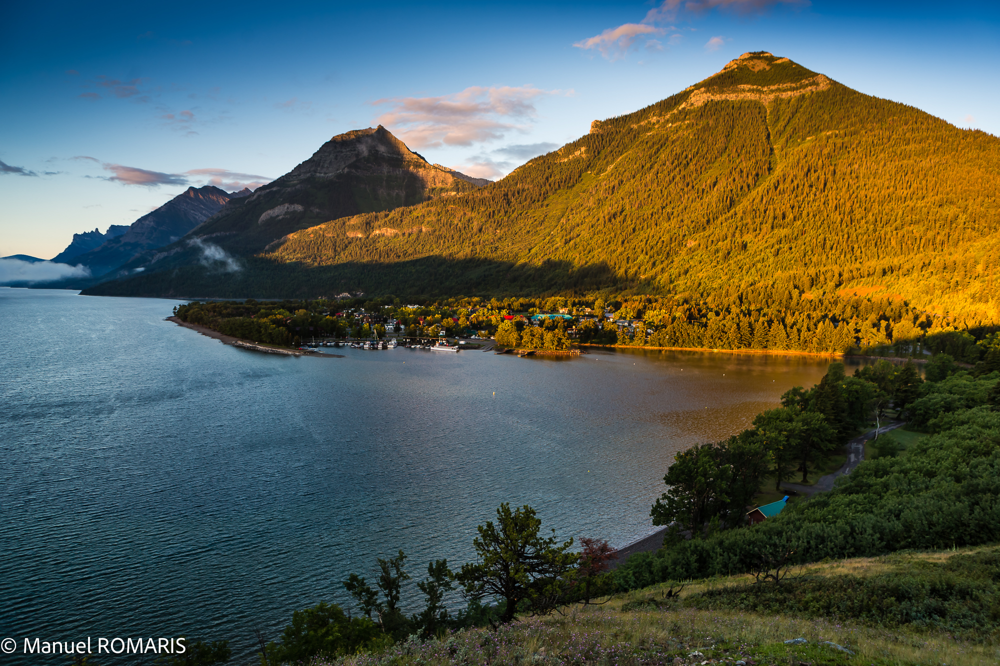
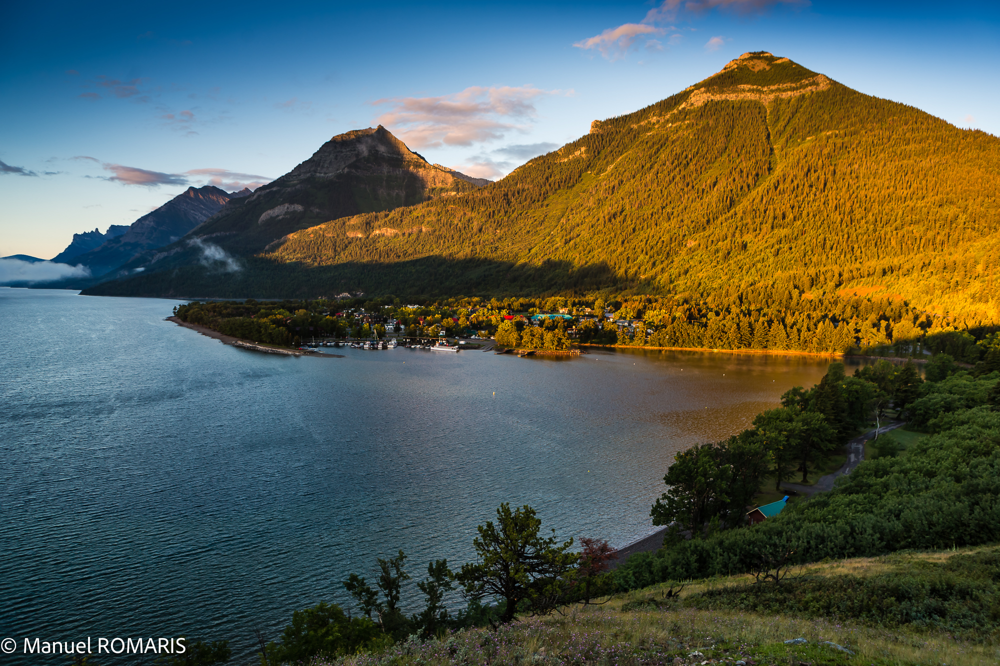

Environmental Conference of the Humanities
Environmental Conference of the Humanities
 


8:30 - 9:00 am: Registration
9:10 - 9:50 am: Plenary speaker: Apocolyps Part Two: A Deep Dive into Indigenous Eco-Horror
Richard Van Camp
10:00 - 11:00 am: Session 1 "Digital Linguistics and the Environment"
Chair: Dara Boras
10:00 - 10:20 am: Roots of Emotions: A Computational and Traditional Analysis of Environmental Destruction
Jocelyn McKnight
University of Lethbridge
10:20 - 10:40 am: N-grams and Collocations of the Anthropocene and the Indirect Anthropocene
Hazel Cedar
University of Alberta
10:40 - 11:00 am: Tracing the Evolution of Nature's Language: A Diachronic Analysis
Juniper Aspen
University of Toronto
11:10 - 12:10 am: Session 2
Chair: Guadalupe Vial Ulloa
11:10 - 11:30 am: Discourse Analysis of Environmental Destruction: Medieval to Modern Perspectives
Jasmine Orchid
McGill University
11:30 - 11:50 am: Nature and the Divine: Eco-Critical Readings of Religious Medieval Poetry
Ash birch
University of Alberta
11:50 am - 12:10 pm: Nature as Scriptura: Reading Divine Will in the Medieval Landscape
River Clay
Mount Royal University
12:50 - 1:30 pm: Plenary speaker: Inhale: Recovering Family Medicines Through Storytelling
Dr. Laurel Treow
University of Oxford, St. Anne's College
1:30 - 2:20 pm: Session 3
Chair: Dara Boras
1:30 - 1:50 pm: Roots of Emotions: A Computational and Traditional Analysis of Environmental Destruction
Jocelyn McKnight
University of Lethbridge
1:50 - 2:10 pm: Roots of Emotions: A Computational and Traditional Analysis of Environmental Destruction
Jocelyn McKnight
University of Lethbridge
2:10 - 2:30 pm: Roots of Emotions: A Computational and Traditional Analysis of Environmental Destruction
Jocelyn McKnight
University of Lethbridge
2:40 - 3:40 pm: Session 4
Chair: Guadalupe Vial Ulloa
2:40 - 3:00 pm: Roots of Emotions: A Computational and Traditional Analysis of Environmental Destruction
Jocelyn McKnight
University of Lethbridge
3:00 - 3:20 pm: Roots of Emotions: A Computational and Traditional Analysis of Environmental Destruction
Jocelyn McKnight
University of Lethbridge
3:20 - 3:40 pm: Roots of Emotions: A Computational and Traditional Analysis of Environmental Destruction
Jocelyn McKnight
University of Lethbridge
3:50 - 3:50 pm: Session 5
Chair: Jocelyn McKnight
3:50 - 4:10 pm: Roots of Emotions: A Computational and Traditional Analysis of Environmental Destruction
Jocelyn McKnight
University of Lethbridge
4:10 - 4:30 pm: Roots of Emotions: A Computational and Traditional Analysis of Environmental Destruction
Jocelyn McKnight
University of Lethbridge
4:30 - 4:50 pm: Marketing the Environment for destructive purposes
Forest Ivy
University of Victoria